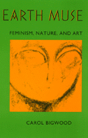

<body bgcolor="#FFFFFF" text="#000000" link="#0000FF" vlink="#CC0000" alink="#CC0000"><center><hr width="350" size="1" align="center" noshade>A philosopher denounces the suppression of the feminine in Western culture<hr width="350" size="1" align="center" noshade><p><a href="https://cdcshoppingcart.uchicago.edu/Cart/ChicagoBook.aspx?ISBN=9780877229865&&PRESS=temple" target="_top">Buy this book!</a> | <a href="https://cdcshoppingcart.uchicago.edu/Cart/Cart.aspx?PRESS=temple" target="_top">View Cart</a> | <a href="https://cdcshoppingcart.uchicago.edu/Cart/Cart.aspx?PRESS=temple" target="_top">Check Out</a></p><p></p></center><!--none//--><h1>Earth Muse</h1>
<H2>Feminism, Nature, and Art</H2>
<h3>Carol Bigwood</h3>
<P>cloth 0-87722-986-4 $69.50, Feb 93, <FONT COLOR=#990033>Out of Stock Unavailable</FONT>
<br>paper 0-87722-987-2 $21.95, Feb 93, <FONT COLOR=#990033>Out of Stock Unavailable</FONT>
<BR> 320 pp
6x9
9&nbsp;figures
</P><BLOCKQUOTE><I>"This book is a real contribution to contemporary feminist literature. The project is interesting and the author invites both her friends and her enemies to rethink the problem."</I>
<br>&#151<b>E.F. Kaelin</b>, Professor of Philosophy, Florida State University<I></I></BLOCKQUOTE>
<p>In <I>Earth Muse</I>, Carol Bigwood describes what she sees as a suppression of the feminine in Western culture, technology, and philosophy and opens a feminist postmodern space from which new differences may emerge. Drawing on the work of the later Heidegger, Merleau-Ponty, Derrida, and significant alternative feminist thought (such as French feminism, maternal philosophy, and ecofeminism), she explores underdeveloped themes in American and Canadian feminism. Bigwood's style is self-questioning and descriptive; she (writes) plays on the margins between philosophy and literature, between serious analysis and humor.
<p>The author offers a deconstruction of the phallocentric dichotomies of nature and culture, self and other, and the concepts of power, action, and making. Affirming the deep relations between the oppression of women, the exploitation of the earth, and the oppression of people of color, Bigwood cautiously attempts to reconceptualize the natural cultural situation of human begins in a way that is not built on domination or essentialist structures. Between the chapters she describes and illustrates four monumental artworks that are "written with the body and are pregnant with poetic-philosophic depths."
<BR>&nbsp;<h2>Reviews</h2>
<p><I>"The principal merit of Carol Bigwood's </I>Earth Muse<I> is, precisely, its earthiness. Extremely detailed analyses of the western philosophical tradition and enculturated attitudes toward nature...are tied together by exquisitely sensual meditations on great artworks.... The striking concreteness of Bigwood's writing&#151her love of the physical of the sensory, of what is fluid and generative&#151represent her antidote to 'the ontological exile of the feminine from western Being' and her cautious, yet profound first steps toward a 'nonsexist ontology.' Much like an accomplished set of musical variations upon a theme, this is an impressive achievement."</I>
<br>&#151<b>Michael Allen Fox</b>, Professor of Philosophy, Queen's University
<p><I>"</I>Earth Muse<I> is a provocative, innovative, insightful and even witty investigation of the intersection of Heideggerian and post-Heideggerian critiques of the 'essence of technology' with the feminist critique of phallocentric thought and culture.... It is a powerful synthesis of two contemporary postmodern views which are not readily associated with each other, and a convincing portrait of what things would look like were we somehow to break the spell of phallocentric and logocentric presuppositions."</I>
<br>&#151<b>John D. Caputo</b>, David Cook Professor of Philosophy, Villanova University
<BR>&nbsp;<h2>Contents</h2><P>
<p>Illustrations
<br>Acknowledgments
<br>Introduction
<p>1. Is "Woman" Dead?
<br><I>Gender-Skepticism and a "Philosophy in the Feminine" &#149
A Heideggerean Defense of Gender and Genesis</I>
<p>2. Renaturalizing Gender (with the help of Merleau-Ponty)
<p>3. The Will to Power and the Feminine
<br><I>Can We Ascribe a Gender to Being &#149
Nature in Metaphysics &#149
Zarathustra's "Love" of the Earth &#149
The Phallocentrism of the Will to Power &#149
Implications for a Feminist Ontology</I>
<p>4. Deconstructing the Culture/Nature Dichotomy: Preparations
<br><I>Women and the Culture/Nature Dichotomy &#149
Art (Techne) and Nature (Phusis) as Ways of Bringing-Forth &#149
The Coming-To-Be of an Entity from Techne and an Entity from Phusis &#149
The Challenging-Out of the Will to Power</I>
<p>5. Mother Doesn't Matter
<br><I>Aristotle's Analysis of the Coming-To-Be of a "Man" from a "Man" &#149
The Ontological Demise of Nature</I>
<p>6. Toward and Backward: An Ecofeminist Revisioning of Human Be(com)ing
<br><I>The Question of Tools &#149
Respecting the Earth's Drawing Pull &#149
Playing in the Gap Between Culture and Nature: Moving into Nearness &#149
Culture as a Cultivating</I>
<p>7. The Being of Water in the Hydroelectric Plant
<br><I>Unlocking Energy &#149
Energy as the Transforming Form &#149
The Storehouse of Energy &#149
Distributing and Switching About</I>
<p>8. Ecological Be(com)ing in the World-Earth Home
<br><I>Whitewashing the Earth &#149
Eco-</I>nomos<I>: Backward to Laws of Social Gathering &#149
</I>Logos</I>: The Laying-Out that Gathers &#149
</I>Eco<I> (home): Gathering-Round &#149
Giving and Power</I>
<p>Notes
<br>References
<br>Index
</P><BR>&nbsp;<H2>About the Author(s)</H2>
<P><b>Carol Bigwood</b> is Assistant Professor in the Philosophy Department at the University of Toronto.</P>
<BR><H2>Subject Categories</H2>
<p><A HREF="/tempress/women.html" TARGET="_top">Women's Studies</a>
<BR><A HREF="/tempress/philosophy.html" TARGET="_top">Philosophy and Ethics</a>
</p>
<p align="center"><a href="https://cdcshoppingcart.uchicago.edu/Cart/ChicagoBook.aspx?ISBN=9780877229865&&PRESS=temple" target="_top">Buy this book!</a> | <a href="https://cdcshoppingcart.uchicago.edu/Cart/Cart.aspx?PRESS=temple" target="_top">View Cart</a> | <a href="https://cdcshoppingcart.uchicago.edu/Cart/Cart.aspx?PRESS=temple" target="_top">Check Out</a></p><p><font face="Arial" size="1"><a href="copyright.html" onMouseOver="window.status='Web Copyright Policy';return true;" onMouseOut="window.status=''" title="Web Copyright Policy">&copy;</a> 2015 <a href="http://www.temple.edu" target="new" onMouseOver="window.status='Link to Temple University home page';return true;" onMouseOut="window.status=''" title="Link to Temple University home page">Temple University</a>. All Rights Reserved. http://www.temple.edu/tempress/titles/931_reg.html</font></p>